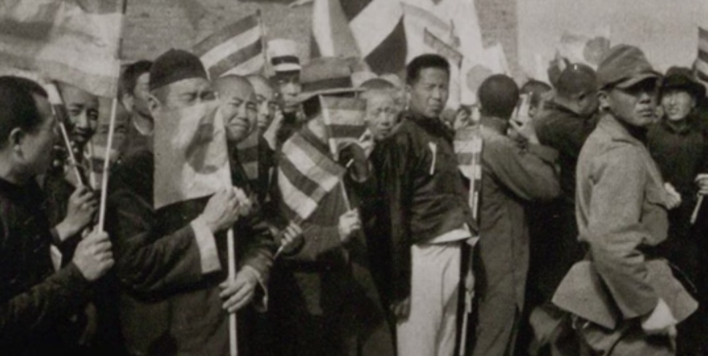
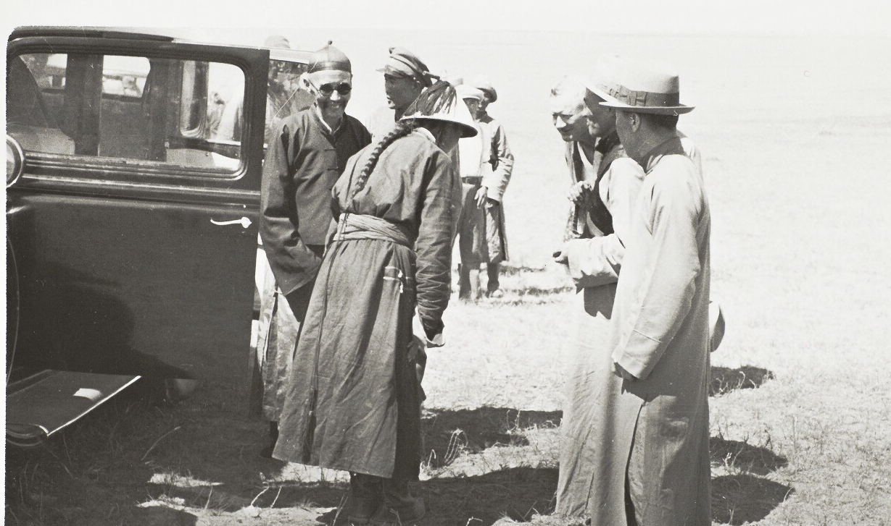
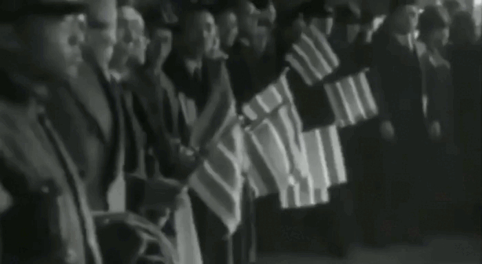

Школьный класс в Мэнцзяне. Видны гос.символы - флаги, портрет Чингисхана
Собрание людей во время провозглашения Мэнцзяна
Охрана Дэмчигдонрова, на них видны европейские солнцезащитные очки
Собрание людей во время провозглашения республики Мэнцзян

Кортеж и ликующий народ во время провозглашения республики Мэнцзян